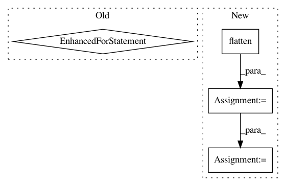

f7c759ca562303127a9991574d5a985d4dff99e8,sonnet/python/modules/rnn_core_test.py,TrainableInitialState,testInitialStateComputation,#TrainableInitialState#Any#Any#,124
Before Change
self.assertAllEqual(sess.run(trainable_state), sess.run(initial_state))
// Change the value of all the trainable variables to ones.
for variable in tf.trainable_variables():
sess.run(tf.assign(variable, tf.ones_like(variable)))
// Check that the values of the initial_states have changed if and only if
// they are trainable.
for trainable_state, initial_state, mask in zip(flat_trainable_state,
flat_initial_state,
flat_mask):
trainable_state_value = sess.run(trainable_state)
After Change
// In eager mode to re-evaluate the module we must re-connect it.
trainable_state = trainable_state_module()
flat_trainable_state = nest.flatten(trainable_state)
// Check that the values of the initial_states have changed if and only if
// they are trainable.
for trainable_state, initial_state, mask in zip(flat_trainable_state,
flat_initial_state,
flat_mask):
trainable_state_value = self.evaluate(trainable_state)
initial_state_value = self.evaluate(initial_state)
if mask:
expected_value = np.ones_like(initial_state_value)
else:
expected_value = initial_state_value
self.assertAllEqual(trainable_state_value, expected_value)
def testBadArguments(self):
initial_state = (tf.random_normal([BATCH_SIZE, 6]),
(tf.random_normal([BATCH_SIZE, 7]),
tf.random_normal([BATCH_SIZE, 8])))
In pattern: SUPERPATTERN
Frequency: 3
Non-data size: 4
Instances
Project Name: deepmind/sonnet
Commit Name: f7c759ca562303127a9991574d5a985d4dff99e8
Time: 2018-07-17
Author: tomhennigan@google.com
File Name: sonnet/python/modules/rnn_core_test.py
Class Name: TrainableInitialState
Method Name: testInitialStateComputation
Project Name: uber/ludwig
Commit Name: 8b0d454102218af317adfeeda8aefc576769e172
Time: 2020-07-21
Author: w4nderlust@gmail.com
File Name: ludwig/models/modules/image_encoders.py
Class Name: ResNetEncoder
Method Name: call
Project Name: ray-project/ray
Commit Name: 1775e89f262111791fabfd40f80a24f74738fe54
Time: 2020-04-28
Author: sven@anyscale.io
File Name: rllib/models/tf/tf_action_dist.py
Class Name: MultiActionDistribution
Method Name: logp